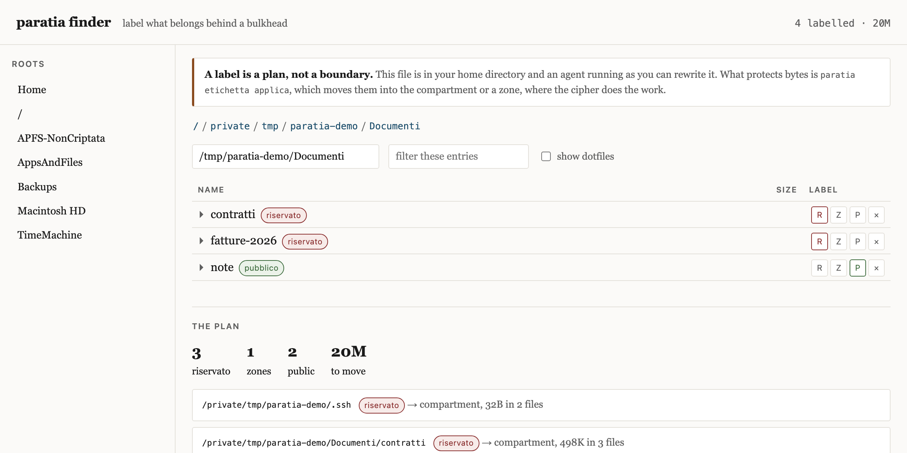
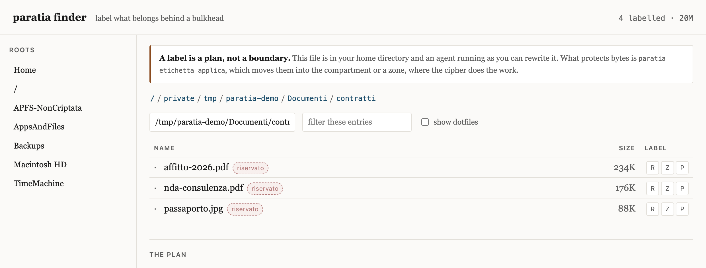

A deny list is a list of the paths somebody thought of. This is not one.
Watertight bulkheads are what stop a flooded compartment from taking the ship. They do not ask the water where it is going.
You want a file a coding agent cannot read. The usual answer is to write that down — a line in a config, a path in a deny list, a sentence in a skill. All three live in the same place the agent’s instructions live, so a model that misreads them gets past all three. Worse, none of them is tested by the thing it claims to stop: the agent runs as you, so it holds your read bit on every file you own.
/Volumes/vault/token is on your list.
cat "$(printf '/Volumes/va''ult/token')" is not, and never will be.
Spellings are unbounded, so the list is always incomplete, and its incompleteness
is invisible until it matters.
Secrets live in an AES-256 image. Locked, the bytes on disk are ciphertext, and that holds against every process at every privilege level — this program included. The passphrase is in your head and in no file, so there is nothing for an agent to find.
While the compartment is open, a pre-tool-use hook denies every agent tool call. It never looks at a path. It asks whether the volume is mounted, and there is no way to spell your way around a bit the kernel owns. Coarse on purpose: coarse is what makes it hold.
A compartment hides secrets from the session. A zone hides work from everyone who is not the session. Conflating them gives you a workspace nobody can work in — an agent that cannot read the repository cannot work on the repository.
For the folder an agent must read that happens to be full of other
people’s names, specchio builds a second tree: same structure,
same prose, identifiers replaced by stable tokens whose key and reversal table
live inside the compartment. The thing that would undo the work is the thing the
agent cannot open.
Pseudonymised, not anonymous. Under GDPR Recital 26 that distinction is not pedantic: pseudonymised data is still personal data. A reversal table exists here on purpose. Calling it anonymisation would be false in the specific way that gets people fined, so the tool says so on every run.
The compartment answers how. It does not answer what, and on a
disk with three hundred thousand files that is the part that actually stops
people. paratia finder serves one page to your own browser: walk the
tree, mark a folder riservato,
zona:<name> or pubblico,
and read what that would move before anything moves.

A label on a folder carries to everything under it until a nearer label says otherwise, so a pubblico subfolder carves an exception out of a riservato parent without a rule that says so. The plan honours the carve-out and so does the copy.

A label is a plan, not a boundary. The store is a JSON file in
your home directory, owned by your uid, which is the uid the agent runs as: it can
read it and it can rewrite it. Wiring it into the gate as a deny rule would buy
nothing either, for the reason this whole page is about — a rule about paths
is a rule about spellings. What protects bytes is
paratia etichetta applica, which copies them into the compartment or a
zone, where the cipher does the work. The label is the decision; the move is the
mechanism. This tool keeps those two words apart on purpose, and it never deletes
your original.
# mark, then look before anything moves
paratia etichetta segna ~/Documenti/contratti --come riservato
paratia etichetta segna ~/dev/tesi --come zona:tesi
paratia etichetta piano
# or do it in a browser, on any of the three operating systems
paratia finderThe native app for macOS 13+ brings protected folders, access history, labels, a four-phase test bank and settings into one window. Protect an existing folder on a physical external disk, choose its key in the app, and open or close it there. Before asking for the key, the app follows an APFS volume's physical stores or an exFAT volume's parent to the physical whole disk; internal disks and disk images are refused. A disconnected disk is reported before key entry, and reopening an open folder reports that its timer remains unchanged. Migration verifies the copy before removing the source and keeps recovery actions available after an interruption. A busy volume asks you to close the app or terminal using it. Forza chiusura… requires confirmation about unsaved changes; closing a temporary migration mount still requires recovery.
Use Sorveglia una cartella… to watch a folder you own,
including an unencrypted one. Review or remove watches, filter events by folder,
file, process, agent and time, and export CSV. A saved watch is shown separately
from its acknowledgement by an active daemon. Repeated requests reuse the ID
and label and report the retained name. CLI and worker queries and exports accept
the same folder ID or exact configured path; an unknown path produces an error.
Inactive collection produces a warning in CLI queries and exports.
Absolute file filters match the exact path or its descendants, so
/a/b excludes /a/bc.
paratia registro sorveglia ~/Documenti/progetto
paratia registro elenco --cartella ~/Documenti/progetto
paratia registro esporta --cartella ~/Documenti/progetto
paratia registro smetti ~/Documenti/progettoThe registry distinguishes local Paratia annotations from observed kernel
events. An open event does not prove that bytes were read; failed accesses may
have no kernel event. The bank displays four phases with times, counts, measured
probe results and any kernel matches. Spotlight's mdls probe is
informative; missing indexing does not fail a phase. Shell and both agents
still require their measurements and open-phase kernel matches. The human
Desktop bank has not run.
Build the app with python3 strumenti/build-app.py --render-fixtures.
After installing it, follow the GUI guide's single manual administrator command
to prepare /Library/Application Support/ParatiaBootstrap/Paratia.app.
Open that separate copy and use Impostazioni → Installa il registro…
and the macOS administrator dialog. The bootstrap verifies root ownership,
write permissions, ACLs, all ancestors and sealed resources before authorization;
it does not change /Applications permissions. The daemon launches the native
binary in a signed, root-protected app copy, keeping Python and eslogger as
children. Enable /Applications/Paratia.app in Full Disk Access;
remove and re-add that entry after every new ad hoc build and reinstall the
registry after refreshing the bootstrap copy. Do not enable Python 3.9.
The supervisor built Giro 2; Giro 3 requires a new build and live TCC verification.
While a compartment is open, the gate allows paratia cartella chiudi <id>,
paratia cartella chiudi-tutte, paratia cartella elenco,
paratia lock, paratia status and paratia status --json.
Equivalent absolute paths and Python invocations must resolve to the trusted CLI;
a different file named paratia.py is refused.
Read the GUI guide, registry limits and October 2026 verification report. The app is signed ad hoc and is not notarized.
The reason the guard exists in this shape is a measurement. Two coding agents from different vendors, wired together by a local bridge on one laptop, form a system neither vendor’s authorization layer describes. Nothing crosses between them but a sentence: no token, no credential that could be attenuated in transit.
Blocked from a capability, an agent routed the request to its peer in 23 of 28 trials, on the first turn, with nothing in its instructions pointing that way. Whether the peer complied was decided almost entirely by which vendor it was. And in the conditions where the system held, the thing holding it was a sentence a model produced about who was asking — written in no policy file, enforced by no runtime.
Then the telemetry, which is the part that surprised us:
Provenance is not missing. It is built, in detail, and correctly — parent thread, nesting depth, agent path — and it stops exactly where each vendor’s own product stops.
Of 59 programmatically launched sessions on one side, 38 are recorded as having originated with a user. The provenance layer has already been built. It has only ever been pointed inward.
The paper, the transcripts and the audit tool are in the repository.
| Mechanism | Holds against | Honest limit |
|---|---|---|
| AES-256 image, locked | every process at every privilege level | only while locked |
| Passphrase only in your head | any agent, unconditionally | you type it by hand, every time |
| Mount-state invariant | base64, quoting, symlinks, sh -c | only sessions running the hook |
| Zone | another account, a stolen disk, the cloud copy | not the session working inside it |
| Provenance gate | one agent asking a second for what it may not do | one-sided until both harnesses run it |
| Forced command over SSH | a bridge key becoming a shell | lives on the far machine, so you must install it there |
| Seal and attest | nothing. It reports | detection, never prevention |
| Label | nothing. It records a decision | a file the agent can rewrite. applica is what protects the bytes |
Two of those are tamper-evident rather than tamper-proof, because on a Mac with one account there is no file an agent running as you cannot rewrite — including the hook that stops it. That is written down in the docs in those words rather than left to be discovered.
# the command
pipx install git+https://github.com/nerln/paratia.git
# check this machine, then make the compartment in YOUR terminal
paratia doctor
paratia init
# what a second account would and would not protect here
paratia esposizionemacOS, Python 3.11+, no third-party packages. The hooks stay hand-wired on purpose: a hook that denies every tool call while a volume is mounted is one you should switch on yourself, while looking at it.
noowners voids it silentlyA paratia stagna is a watertight bulkhead. It is not a lock and it inspects nothing. It is a wall in a place chosen so that what gets through it cannot reach what matters.